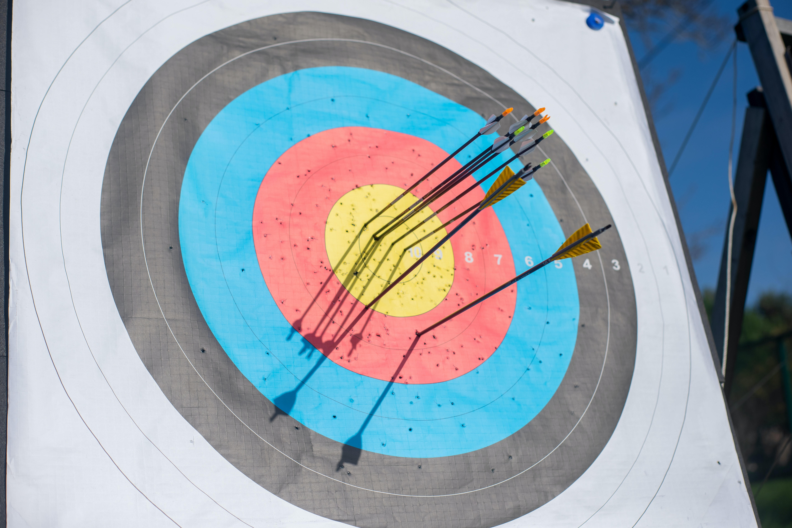

An introduction to the hunter

The hunter is a unique class because of the physical ranged damage and their pet. While warlocks
have pets as well, they are not nearly as powerful as the hunter pet.
Hunters also have some unique requirements that add to class flavor, such as the need to carry ammo,
or the need to find food to feed your pet. Your pet will do increased damage if you keep them happy and well fed.
Some important things to keep in mind:
- Always carry a full quiver/ammo bag of ammunition. Running out of ammo will make life much harder as a hunter.
- Carry enough food for your pet. Running out of food will cause your pet to become unhappy, reducing damage and potentially leading to them running away.
- Keep your gear repaired at all times. Having an item break, especially your weapon, will make you much weaker.
- Always have a full stack of food and water in your inventory. Always buy the highest level available of food/water.
- Between quest objectives, kill every enemy you come across. This is known as grinding and will keep you caught up with the level requirement of whatever quests are in the zone you're in.
- Keep your distance!! You have a decent kit of melee abilities at your disposal, but they are nothing compared to your ranged capabilities.
- Avoid killing other players. They often will become vindictive, stopping at nothing until they get their revenge. While this can be very entertaining, if leveling up quickly is your goal you should avoid PVP conflict if possible.